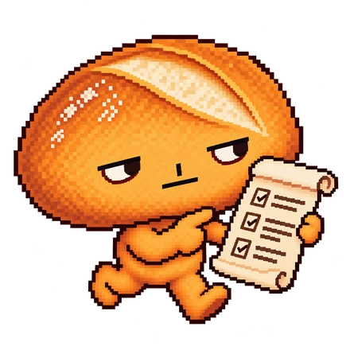

Terms of Service
We wrote these to be read. Each section opens with the crumb, a one-line summary from Baked, our grumpy bread roll. The crumb helps you read; the text under it is the rule.
The whole thing in 30 seconds
- You use your own wallet. We never hold your keys.
- Each market is a YES or NO question the blockchain can answer. A program reads the answer. Nobody votes.
- You put USDC on a side. When it ends, the people who were right split the pot. We keep 10% of the losing side.
- Your money stays in until the market ends. No early exit.
- Today it all runs on Solana devnet, with test USDC worth nothing, and the program is not audited.
- You can lose everything you put into a market.
1. Who we are
The crumb: a few bakers, one oven, no company yet.
Brot Markets is run by Bernardo Nery, Lucas Galvão and Ronaldo Pereira. A company is being set up; when it exists, these terms will name it, and it takes our place. You accept these terms when you connect a wallet or sign a transaction through brot.markets. If you don't agree, don't connect.
2. Who can use it
The crumb: adults only, and only where it's legal for you.
You must be 18 or older (or the age of majority where you live, if higher), not on a sanctions list, and not in a place where we block access. While everything runs on devnet with test tokens, we block no country; the list will be published here before any real money. Checking that prediction markets are legal where you are is your job. Don't use a VPN to get around a block.
3. Your wallet
The crumb: your keys, your money, your problem if you lose them.
You connect a self-custody wallet. No account, no name, no ID. We never see or hold your keys, and nobody can recover them. You sign every transaction yourself and pay Solana's network fees.
4. How a market works
The crumb: a question, a pot, and a program that reads the answer.
- Only questions the chain can answer. At launch: a large asset's price (from the Pyth oracle; YES if it touches the target at any moment), a token burn, locked liquidity on Meteora, a stake pool's size and a validator's stake. No opinions, no politics, no sports.
- Entries are USDC on YES or NO, as many as you like, recorded in your wallet's name.
- Entries close when 5% of the market's time is left (at least 24 hours, at most 7 days before the end), or the moment an irreversible event like a burn happens. Markets last 3 to 90 days.
- The odds are an estimate. They change with every entry and only become final when entries close.
- No early exit.
5. How a market is decided
The crumb: the program reads, a human can only say "that's wrong", and nobody can flip a result.
The program reads the account and compares it with the target: met is YES, end date passed is NO. It can end early if the target is met. Then payouts wait 6 hours, during which our team can only confirm the result or annul the market, never switch YES and NO. If something looks wrong, tell us (section 13): a dispute rereads the data from an independent source and, if needed, three team members decide by majority, still only confirm or annul. Worst case, payouts go out 55 hours after the result.
A market is annulled when its account can't be read, when our service missed the reading, or when the review finds the reading was wrong. A missed reading would otherwise end in NO; annulment is how we fix it. A half-baked market gets thrown out, not sold.
6. Money
The crumb: we take a slice of the losing side. Never from the winners' stake.
- Our fee is 10% of the losing side. Example: 600 USDC on the winning side, 400 on the losing side. We keep 40, the market's opener gets 10 (section 7), and the winners split 950. Put in 60, get 95. (A seed's prize, if any, is added on top, fee-free.)
- One-sided pot (nobody on the other side): everyone gets their entry back; the first wallet pays nothing, the rest pay 1%.
- Annulled market: everyone gets back exactly what they put in, no fee.
- Payouts are automatic, after the review window. Our service can't choose who gets paid or how much. If it stops, payouts are late, never lost. If your USDC account is closed, your share waits in your name.
- Taxes where you live are yours.
7. Opening a market
The crumb: anyone can open one. You bring the dough, we bring the oven.
You pick the kind, the account to read, the target and the date, and put in a seed of at least 500 USDC: 90% becomes prize money for whoever wins, 10% is our opening fee. You earn 1% of the market's volume. If the market ends one-sided or is annulled, the prize comes back to you and you earn nothing. The fine print of the opener's share, and whether the opening fee comes back when we caused an annulment, will be written here before the first market opens.
The site writes the question from what you picked, and the program refuses accounts that don't fit.
You may open a market about your own project, even one whose result you control, like your own burn. That's the point. Those markets carry a warning: "The person who opened this market may control the result and may have picked a side." You may not hide that the market is yours.
8. Don't
The crumb: don't poison the dough.
Don't attack or overload the site, the program or our services. Don't use a bug: report it. Don't tamper with the data a market reads, other than doing in the open what the market asks about. Don't trade on stolen or confidential information. Don't fake volume with your own wallets. Don't launder money, dodge sanctions, defraud anyone or pose as another project. If you do, we may block you from the site and tell the authorities. We can't touch money already in a market.
9. What we control
The crumb: we can turn the oven off. We can't eat your bread.
| Power | Who | Limit |
|---|---|---|
| Change the program | Two team members on devnet; on mainnet, 2 of 3 founders | On mainnet, announced with a public delay |
| Confirm or annul | One team key | Never flips a result; reasons are recorded |
| Pause | One team key | Never blocks payouts or refunds |
| Change the fee | Nobody, while a market is open | Fixed ceiling in the program |
We may also block the site for some places or wallets, or shut it down, with as much notice as we can give.
10. Risks
The crumb: new technology, real risk. Baked has seen things.
You can lose everything you put in. Programs have bugs, even audited ones, and ours isn't audited yet; real money comes only after an audit, a 2-of-3 founders' wallet and a cap. Oracles, our services and Solana itself can fail. USDC can be frozen by its issuer or lose its peg. The law is changing fast and could force us to block your country or close, in which case we'll annul open markets and refund if the program lets us.
11. Our responsibility
The crumb: we'll own our mistakes. We can't insure the blockchain.
Brot Markets is provided "as is". We're not liable for losses caused by your wallet, your choices, Solana, Pyth, Circle or anything else we don't control. Where the law allows, our total liability will be capped at an amount we'll state here before any real money is in play. Nothing here limits what your local law won't let us limit. Nothing we, the site or Baked say is financial, legal or tax advice. Especially Baked.
12. Changes
The crumb: we may change the recipe. Never for a market already in the oven.
We'll update the date above and post on X when these terms change. An open market keeps the rules it opened with.
13. Talking to us
The crumb: talk to us first. Most problems fit in a direct message.
Write to @brotmarkets on X. For a legal dispute, give us 30 days to fix it first. The law that governs these terms and the place for disputes will be set when the company exists, before any real money. If one part of these terms is invalid, the rest stands. These terms and the Privacy Policy are the whole agreement.
You made it to the end. Baked is mildly impressed. Proof > Promises.